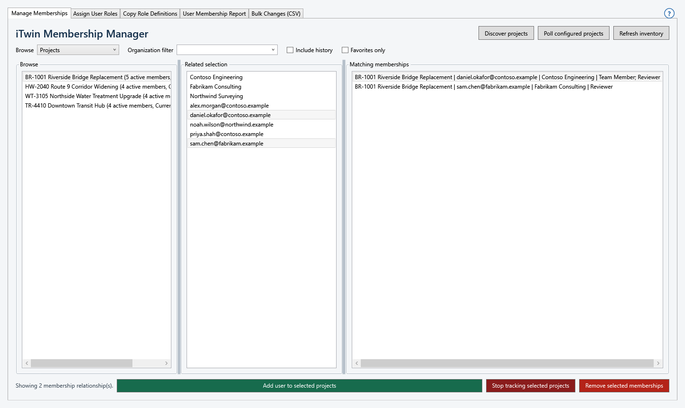
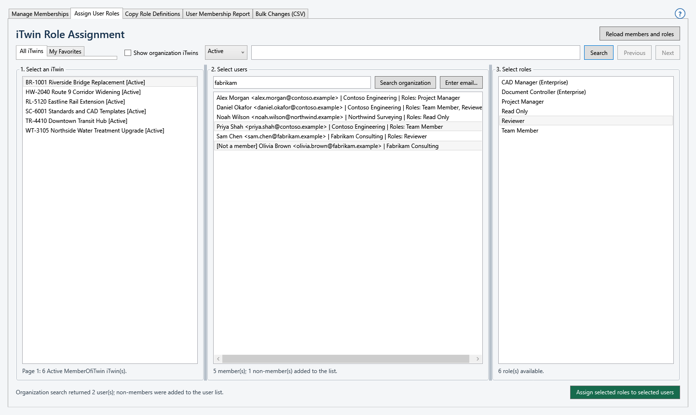
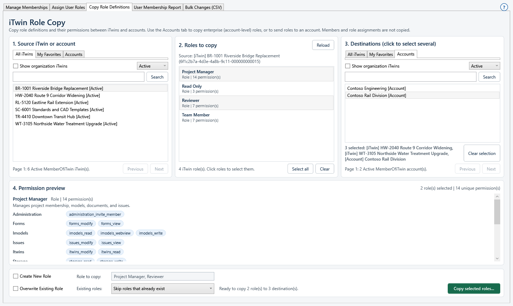
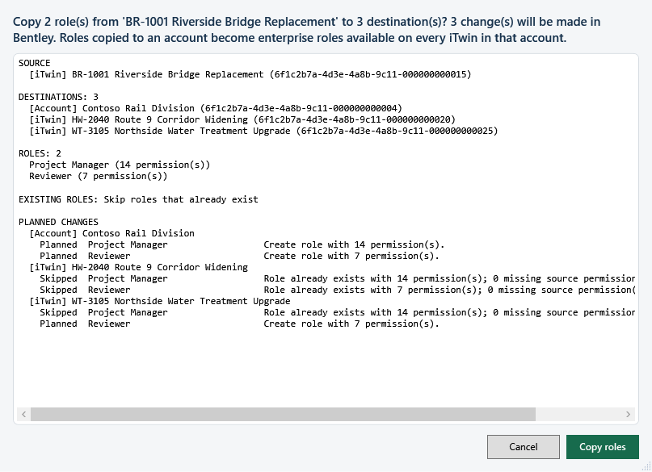
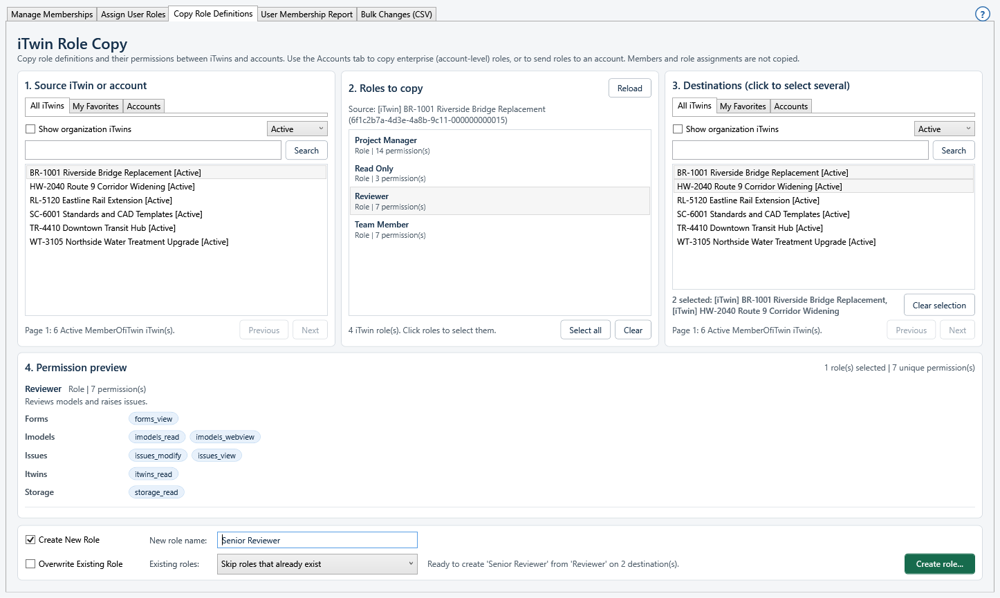
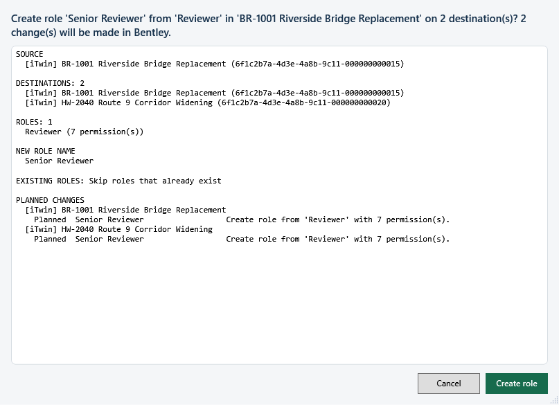
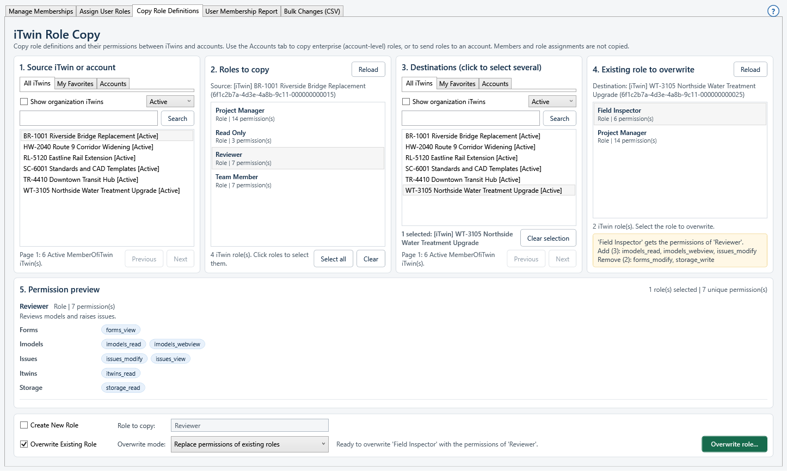
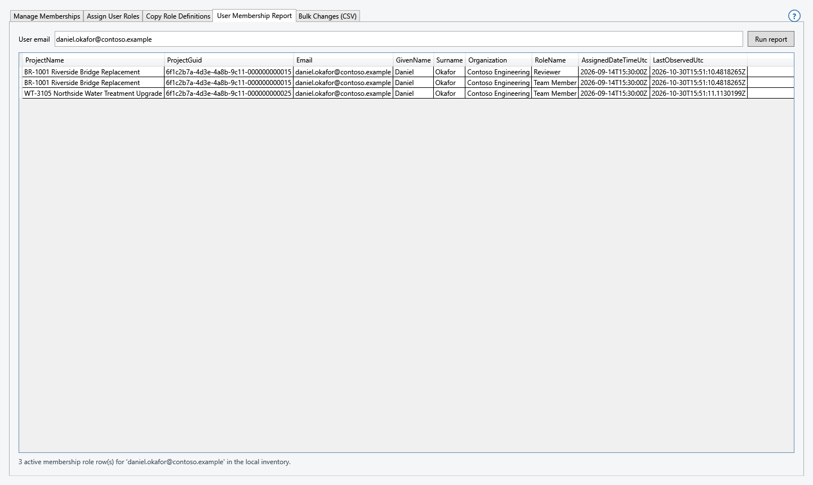
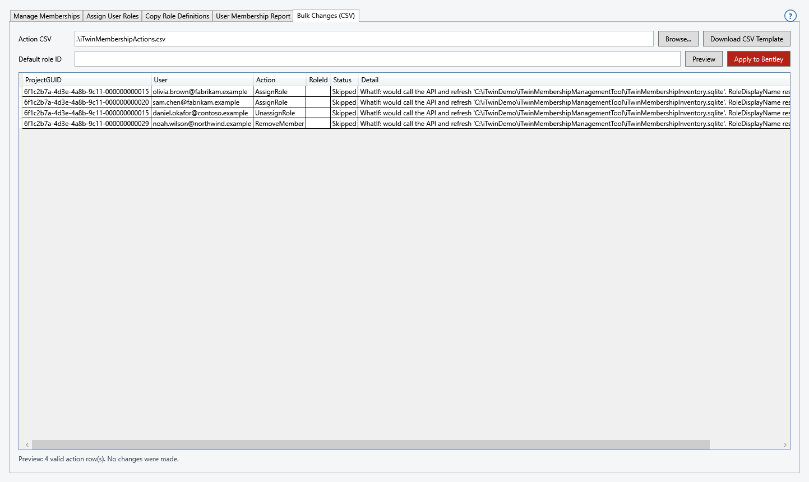

iTwin Membership Console
ManageUsersConnectedProjects.ps1 opens one window for
managing who can access your Bentley iTwins and what they can do
there.
The screenshots use fictitious projects, users, and organizations. Select any screenshot to open it at full size.
Before you start
-
Use Windows PowerShell 5.1 x64. The console must
run in an STA host, so start it with
-STA. -
Install
pwps_dab(for Bentley sign-in) andPSSQLite(for the local inventory):Install-Module PSSQLite -Scope CurrentUser. -
To add or remove members you need the
administration_invite_memberpermission on the iTwin, or an Organization Administrator role. To copy roles you needadministration_manage_roleson each destination, or an Organization Administrator role. - The first time the console calls Bentley, a Bentley sign-in window opens.
Start the console
From the tool folder, run:
powershell.exe -NoProfile -ExecutionPolicy Bypass -STA -File .\ManageUsersConnectedProjects.ps1Optional parameters:
| Parameter | Default | Purpose |
|---|---|---|
-ProjectConfigPath |
iTwinProjects.csv |
Projects that are tracked in the local inventory. |
-AuditLogPath |
iTwinMembershipManager-audit.csv |
One row per membership or role-assignment change. |
-RoleCopyAuditLogPath |
iTwinRoleCopy-audit.csv |
One row per copied role and destination. |
Select the ? button at the top right of the console at any time to open this guide.
Choose a tab
| Tab | Use it to | Reads from | Changes Bentley |
|---|---|---|---|
| Manage Memberships | Browse who is on which tracked project, add users, and remove memberships. | Local inventory | Yes, after you confirm |
| Assign User Roles | Give users on one iTwin more iTwin or enterprise roles. | Bentley (live) | Yes, after you confirm |
| Copy Role Definitions | Copy roles and their permissions from one iTwin or account to others, create a renamed copy of a role, or overwrite the permissions of an existing role. | Bentley (live) | Yes, after you confirm |
| User Membership Report | See every project and role one user has. | Local inventory | No |
| Bulk Changes (CSV) | Apply many membership changes listed in a CSV file. | CSV and Bentley | Yes, after you confirm |
Tabs that read the local inventory show what was last seen when projects were polled. Poll projects first (see Set up the local inventory) for current results. Bentley API calls run on the window's thread, so the window does not respond until each call finishes.
Set up the local inventory
The first time you open the console there is no inventory yet, so the Manage Memberships tab shows two buttons instead of the browser:
- Select Discover projects, search for or page through your iTwins, select the ones to track, and select Add selected to configuration. Select Show organization projects to list every project in your organization; this requires an Organization Administrator role.
-
Select Poll configured projects. The console
reads the members and roles of every tracked project and stores
them in
iTwinMembershipInventory.sqlite.
Poll again whenever you need current data. For scheduled polling,
use AddRemoveUsersConnectedProjects.ps1 -Mode Poll.
Manage Memberships


Browse the inventory in three linked panes, from left to right:
-
Choose what to Browse:
Projects,Users, orOrganizations. The left pane lists them. - Select one or more items on the left. The middle pane lists related users and organizations (or projects).
- Select items in the middle to narrow the Matching memberships pane on the right. Each row shows project, email, organization, and roles.
Use Organization filter to limit the lists to one organization, Include history to show memberships that no longer exist, and Favorites only to show only projects that are favorites in Bentley.
| Button | What it does |
|---|---|
| Add user to selected projects |
In Projects mode, adds one email to every selected project.
Team Member is used when it exists; otherwise you
choose a role for each project.
|
| Remove selected memberships | Removes the exact rows selected in the right pane from Bentley. This cannot be undone. |
| Stop tracking selected projects |
Removes projects from iTwinProjects.csv and
deletes their local history. Bentley is not changed. Backups
of the CSV and database are made first.
|
| Refresh inventory | Reloads the lists from the local database. |
Assign User Roles


This tab works directly against Bentley and does not need a poll.
- Select an iTwin. Use All iTwins or My Favorites, the status list, and Search. Use Previous and Next to page through results.
- Select users. Current members are listed with their roles. To add someone who is not a member, type part of a name, email, or organization and select Search organization, or select Enter email... to type addresses. People outside your organization are invited by email.
- Select roles. Roles marked (Enterprise) are defined on your organization's account and are available on every iTwin in it.
- Select Assign selected roles to selected users, review the summary, and confirm.
Existing roles are always kept; users only receive the roles they are missing. If the iTwin is tracked, its local inventory is refreshed afterwards.
Copy Role Definitions


Copies the definition of a role (its name, description, and permissions) to other iTwins or accounts. It does not copy members or role assignments.
- Source iTwin or account. Pick where the roles come from. Use the Accounts tab to copy enterprise roles.
- Roles to copy. Click roles to select them, or use Select all. The Permission preview at the bottom shows each selected role's permissions grouped by service area, and the read-only Role to copy field at the bottom lists the selected role names.
- Destinations. Click to select one or more iTwins and accounts. Selections are kept when you change tabs, pages, or searches; the summary under the list shows everything selected.
-
Choose what to do with Existing roles that have
the same name (ignoring case) on a destination:
- Skip roles that already exist (default and safest).
- Add missing permissions to existing roles.
- Replace permissions of existing roles. This can remove permissions from the destination role.
- Select Copy selected roles.... The console reads every destination and shows the planned change for each role before anything is changed.


Review the plan and select Copy roles to apply it, or Cancel. A results window follows, and each result is written to the role copy audit CSV.
Create a new role from a source role


Check Create New Role to copy one source role under a different name, for example to start a new role from an existing one. The field changes to New role name and becomes editable; when the option is cleared, the field is read-only again and shows the selected role names.
- Select exactly one role in Roles to copy.
- Select one or more destinations. The source iTwin or account itself can be a destination, which creates the new role next to the original.
- Type the New role name.
- Existing roles applies when a destination already has a role with the new name: skip it, add missing permissions, or replace its permissions.
- Select Create role..., review the plan, and confirm.


The new role gets the source role's permissions and description. Members and role assignments are not copied. Results are written to the role copy audit CSV with the new name in the RoleName column.
Overwrite an existing role


To update one specific role, whatever its name, check Overwrite Existing Role. A fourth pane, Existing role to overwrite, appears. Select one source role and one destination (it may be the source itself), then pick the role to overwrite. The yellow box lists the permissions that will be added and removed. Choose Add missing permissions or Replace permissions and select Overwrite role.... Only permissions change; the role's name, description, and members are kept. Changing an enterprise role affects every iTwin in that account.
Create New Role and Overwrite Existing Role cannot be used together; checking one clears the other.
Copying to an account creates enterprise roles that are available on every iTwin in that account. Copying an account's enterprise roles to one of its own iTwins creates separate iTwin roles with the same names.
User Membership Report


Type an email address and select Run report (or press Enter). The grid lists each active project membership and role for that user from the local inventory, including when each role was assigned and when the membership was last observed. The report never changes Bentley.
Bulk Changes (CSV)


Applies many changes from an action CSV file.
- Select Download CSV Template to save a sample file, then replace its placeholder project GUIDs, emails, and roles. Or select Browse... to choose an existing file.
-
Optionally enter a Default role ID to use for
AssignRolerows that do not name a role. - Select Preview. The file is validated and listed without calling Bentley.
- Select Apply to Bentley and confirm to make the changes.
| Column | Required | Notes |
|---|---|---|
ProjectGUID |
Yes | Must be listed in iTwinProjects.csv. |
User |
Yes | Email address. |
Action |
Yes |
AssignRole, UnassignRole, or
RemoveMember.
|
RoleId |
No | Role GUID. Use it when a role name is ambiguous. |
RoleDisplayName |
No | Role name, matched ignoring case, including enterprise roles. |
UnassignRole and RemoveMember cannot be
undone. Each row reports Success, Skipped,
or Failed, and a failed row does not stop the rest.
Logs and audit files
Files are written beside the script:
-
ManageUsersConnectedProjects.ps1.<timestamp>.LastRun.log: everything the console reported during that session. -
iTwinMembershipManager-audit.csv: membership and role-assignment changes, with time, Windows user, project, email, action, status, and detail. -
iTwinRoleCopy-audit.csv: role copy results, with source, destination, role, action, status, and detail.
Sign-in tokens are never written to these files.
Troubleshooting
| Message or symptom | What to do |
|---|---|
This script requires an STA PowerShell host.
|
Start Windows PowerShell with -STA, as shown in
Start the console.
|
PSSQLite is required. |
Run Install-Module PSSQLite -Scope CurrentUser.
|
| Manage Memberships says the inventory is not available. | Discover projects, then poll them. See Set up the local inventory. |
Organization access is unavailable; showing your
iTwins.
|
Your account is not an Organization Administrator, so only iTwins you belong to are listed. |
| Enterprise roles are missing from Assign User Roles. |
Reading them needs administration_manage_roles on
the account or an Organization Administrator role.
|
| A report or the Manage Memberships tab shows out-of-date data. | Select Poll configured projects, then Refresh inventory. |
| The window stops responding briefly. | A Bentley call is running. Wait for the wait cursor to clear. |
For command-line modes, scheduled polling, and inventory details,
see iTwinMembershipInventory.md in the tool folder.